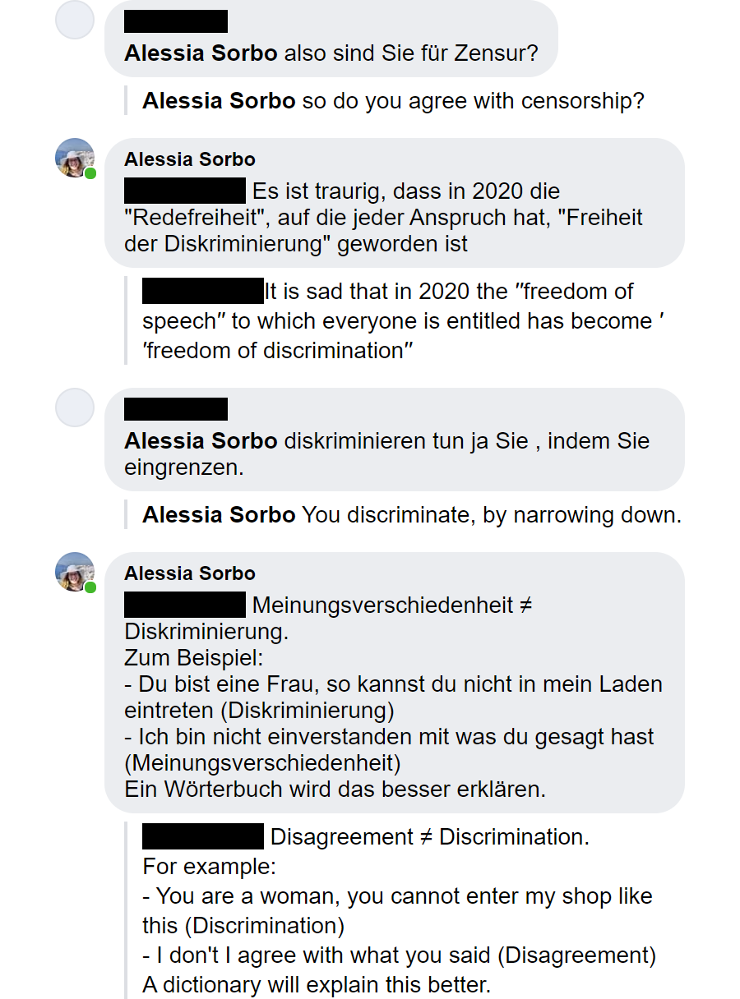

2020 was a stressful and difficult year for everyone, and 2021 is not up to a good start. Personally, in the last year I learned a lot about privilege and discrimination. Above all, after all these months without writing, my failed explanatory attempt under a Facebook post inspired me into a deeper reflection.
Synopsis
Tages Anzeiger is my favorite Swiss journal. Every article has the personal touch of its author and I find it very satisfying to read. However, some months ago, I came across an article about the last allegations concerning J.K. Rowling and her last book. I am sure you know what I am referring to. If not, here is some background for you.
This article defends the work of J.K. Rowling as literature:
“Wird man Literatur gerecht, wenn man sie nicht nach ästhetischen Kriterien beurteilt, sondern nach den vermuteten politischen Ansichten der Autorin? Oder danach, ob ihre Figuren moralischen Idealtypen entsprechen? Beschreibt Literatur die Welt, wie sie sein sollte? Oder zeigt sie nicht gerade, wie ambivalent und unberechenbar wir auch als moralische Wesen sind? Ist nicht dies eine der edelsten Aufgaben der Literatur, gerade auch in menschliche Abgründe zu leuchten? Literatur ist kein moralisches Wunschkonzert. Wer nur noch moralisch unbedenkliche Figuren zulassen will, kann Literatur gleich ganz abschaffen.“
Fundamentally the article asserts that literature shouldn’t be judged by the political views of the author, or by whether the characters depicted in it represent moral ideal types. On the contrary it explains that literature has the “noble“ task to show how ambivalent and unpredictable is the human as a moral being. It also asserts that, If we expect to find morally unobjectionable figures in what we read, then “we can get rid of literature“. “Literature is not a moral wish concert“.
Censorship
The thing you hear most in primary school, at least in Italy, is “read more”. Reading is what we learn starting from childhood. It is the act that makes us feel included in our culture and society.
Some of us have the privilege to read without the limitation of censorship, a right that was fought for.
However, the question that keeps knocking in my head is:
Do we still want to read statements dripping with outdated concepts?
Lately I have the feeling we are going backward instead of forward. If you read an interesting article on social media, you end up bumping into close-minded and utterly ignorant comments. I could live with it, if those weren’t written from such young people.
Our society is built upon privilege granted by a specific sex, color of the skin, wealth, health, sexual orientation, ableism and many more. 2020 gave us a great example, forcefully opening our eyes about discrimination of Black People, which we ignore especially because of our internal Systemic Racism, and yet the hate spreads under accurate articles and on notorious people social media profiles.
In this context we quite often hear about censorship perpetuated by social media platforms.
It is important to remember that censorship is actually an act perpetrated by the state which makes it illegal to even have an opinion that is not aligned with its official view.
Nowadays we end up confusing the meaning of the word censorship using it in a colloquial way to denote a dissent or, like you are going to see in the next paragraph, while calling on freedom of speech to justify discrimination, hate, conspiracy theories, etc.
My comments and the party of ignorants
Since the article was very bland, justifying somehow the behavior of J.K. Rowling (14,2M followers on Twitter) “in name of literature“, I acknowledged the broad influence of the author, while pointing out the contradiction of attacking trans women as a feminist. I will not post all the comments, but these two deserve a discussion.

I want just to briefly thank google translator and my boyfriend. Both helped me put down the right words in German and find the right sources. One especially stepped in to the rescue while I was looking for my lost chakra.
In order to trigger the first accusation, I commented that everyone can write about anything they want, but “without hypocrisy“; maybe not the best choice of words.
I soon explained myself expanding on the concept:
It is sad that in 2020 the “freedom of speech”, to which everyone is entitled, has become “freedom of discrimination”.
The point is not what is written, but the message that the book brings with it. A transphobic behavior in J.K. Rowling’s case.
The second accusation is that I am the one discriminating.
This is another misunderstanding. My example is very simple, but effective. Disagreement is licit and also pleasant, if it is part of a peaceful and interesting exchange of arguments. On the contrary discrimination is the act, based on hate or fear, limiting someone else’s freedom.
I got mad and offended for a bunch of words; I can just imagine what discriminated categories are going through. The frustration they must feel, it’s nothing like my wounded pride.
So my questions are again:
Are we willing to watch people of influence and power instigate hate and discrimination?
Do we still want to read obsolete opinions our ancestors worked so hard to overcome?
Is it right to ban a message that praise discrimination?
Let’s join our livers
So what’s the point?
Every person has the right to voice their opinion, racist or not. This doesn’t mean that they are free from other’s judgement and disagreement.
Freedom of Speech is not Freedom from Consequences
Social media is our new reality. These platforms have both the right and the responsibility to police themselves, as clearly stated in their Terms of Service (e.g. Twitter’s Hateful conduct Policy).
You are entitled to your own opinion and to use your voice to express it. Social media have the power to amplify it, but not the obligation.
We cannot expect social media to create a more peaceful and hate free environment for us, let’s support those few that try to spark a constructive discussion, especially those that corroborate their positions with facts against prejudice, stereotypes and conspiracy theories.
Or… Why not just be one of them?
The more the merrier. Let’s consume our livers together for a better inclusive world.
Here is Xena showing us how to slap conspiracy theoriesNo, Peanut. They are not Patriots. They are your flying monkeys,homegrown terrorists, QAnon actors. They are the douchebags that go out and do the evil bidding of people like you who like to wind them up like toys and let them do their worst. #keepingYourFilthyHandsclean #enabler
— Lucy Lawless (@RealLucyLawless) January 7, 2021
Alessia Sorbo
2021-01-10